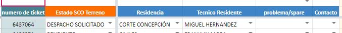

Cuando se concurre a revisar un requerimiento y este tiene problemas de falla en hardware e imposibilita el uso del equipo
Se deriva a SCO (Katherine Sanchez) con la siguiente información comentada en sistema Mauweb
SOLICITUD DE DESPACHO EN PROCESO DE GESTION
Se debe cambiar el estado en planilla a “Despacho Solicitado” y dejar como se muestra en ejemplo
Recordar que una vez que llegue el spare, Uds. terminaran la atención para dar solución.
De no tener acceso informar para gestionar los permisos.